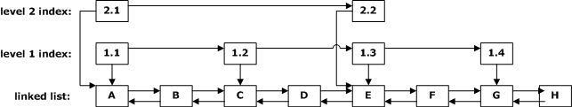

Part 2.
First, some background is in order to explain why linked lists are relevant to the topic of binary trees. In this module we discussed the basic binary tree, in which items are added without regard to their relative ordering. In the next module we will talk about ordered binary trees, where the items are stored in a binary tree in sorted order; the resulting trees are called "search trees". As we will discuss in modules 10 & 11, the implementations of search trees can be complicated, but the advantage is that searches can be performed in O(log N) time, something that cannot be accomplished with a standard linked list (although it is possible for an array-based list). One alternative to the binary search tree that more closely resembles a linked list is known as the skip list. A skip list has as its base a linked list structure, but overlays this linked list with one or more levels of indexing. The indexes consist of nodes that skip over one or more nodes of the linked list, as shown in the diagram below:

One prerequisite for the skip list is that the items must be stored in sorted order, or the indexing won't work. With a skip list, to find an item one begins with the first node at the highest index level (level 2 in the diagram above), and traverses the nodes in that index level. As long as the item indexed is less than the item being searched for, the traversal continues at that index level. If an item is greater than the item being searched for, or the last node in that index level has been reached, it is necessary to back up to the previous index node on that level, then go down to the corresponding index node on the next lowest level, and begin traversing at that level. Eventually, it will become necessary to jump down to the list itself to continue the search. In a large list, this can considerably shorten the search time. The index nodes are similar to the nodes in a tree. For example, index node 1.1 would be the parent of nodes A & B, and index node 1.2 would be the parent of nodes C & D, etc. All the index nodes on a given level are siblings.
Skip lists can be rather tricky to implement. The way in which the index nodes are updated when items are added or removed can result in poor performance if not done properly. Additionally, it is important to conserve space, which entails minimizing the number of node references each node contains. Because of these problems, all I am asking you to do for the second part of this assignment is to complete the first step in creating a skip list: implement a very basic, ordered linked list. I have provided the framework of the class for you: class OrderedLinkedList. All you need to do is implement three parts of the list:
- the nested OrderedListNode class
- the add(Comparable obj) method
- the remove(Comparable obj) method
Please follow these guidelines when implementing your class:
- Remember that because the items in the list must be stored in sorted order, you will need to use data items of type Comparable rather than type Object.
- Do not extend any of the data structure classes or interfaces I have provided for this course (doing so will be more trouble than it is worth).
- You do not need to add any additional methods beyond those listed above.
- You may store the items in either ascending or descending order, whichever you prefer, but choose only one ordering.
- The OrderedListNode class must be a nested class (i.e., it must be an inner class declared as static). The implementation should be similar to the nested class ListNode of the LinkedList class, except it should store a data item of type Comparable rather than type Object.
- Be sure to test your OrderLinkedList implementation. Remember that you do not need to create your own Comparable items to use as test data; just use String objects or Integer objects.